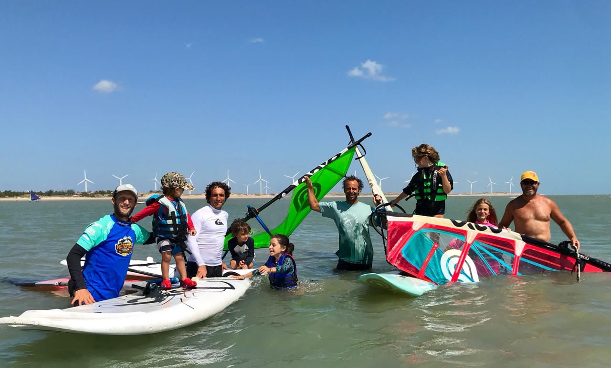
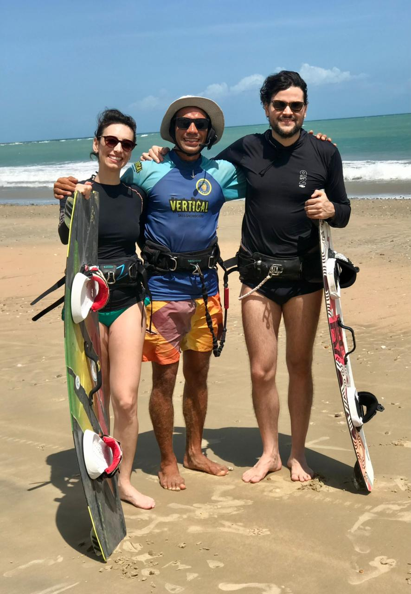
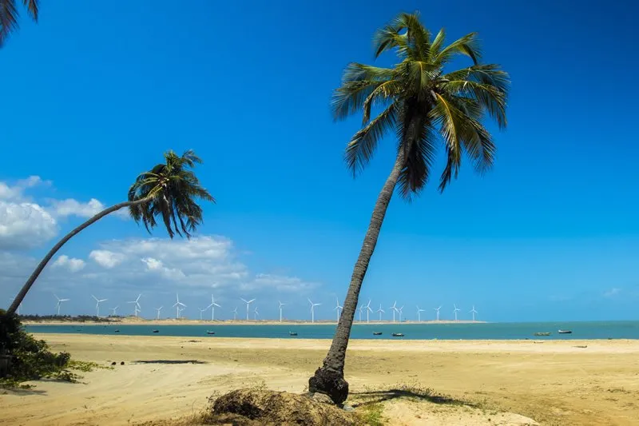
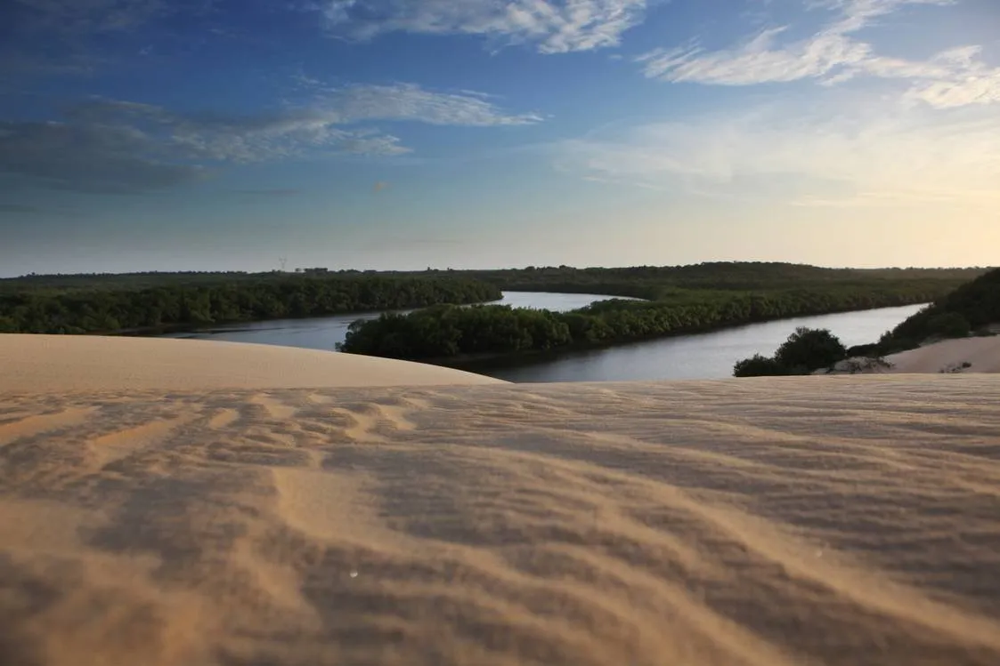
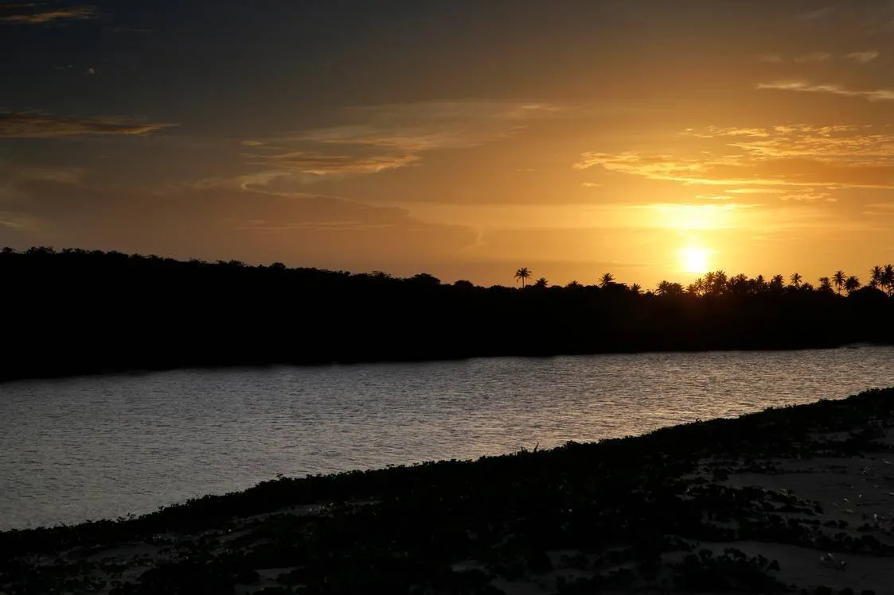
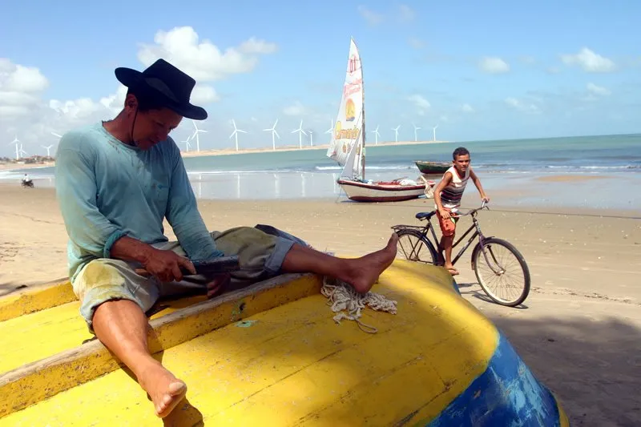
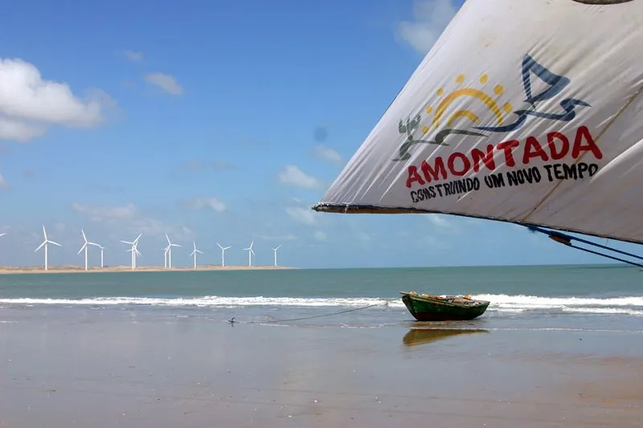
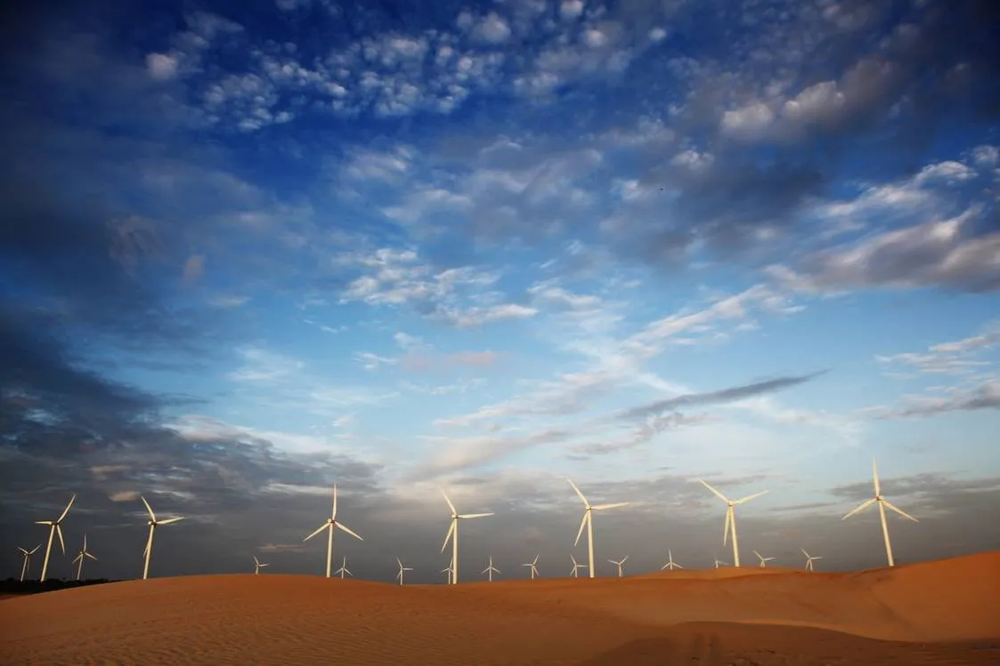
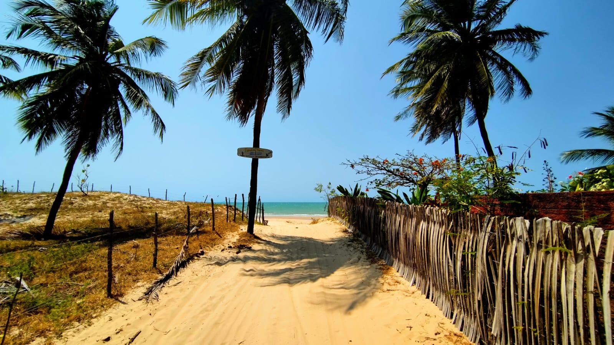

Icaraizinho de Amontada é uma antiga vila de pescadores no litoral oeste do Ceará que cresceu de forma orgânica graças ao turismo consciente. Com pouco mais de 2.000 habitantes, mantém o encanto intocado de uma praia nordestina enquanto recebe visitantes de todo o mundo atraídos por um segredo a céu aberto: o vento perfeito.
O nordeste sopra com força e constância durante boa parte do ano, transformando as praias e lagoas da região num playground natural para kitesurf, wing foil e windsurf. Mas Icaraizinho é muito mais do que um spot de esportes náuticos — é uma experiência de vida.
Os Principais Spots em Icaraizinho
A região oferece três ambientes completamente diferentes, cada um com as suas próprias condições de vento, maré e ondas. A Todos Al Agua escolhe o spot ideal para cada aula de acordo com o nível do aluno e as condições do dia.

Spot 01 · Na vila
Baía de Icaraizinho
O spot mais acessível, a poucos metros dos alojamentos. Com maré baixa a média oferece águas planas e rasas — perfeitas para windsurf e wing foil de iniciação. Vista deslumbrante para as dunas e cata-ventos no horizonte.
WindsurfWing FoilIniciante

Spot 02 · 20 min de 4×4
Praia da Ponta
O "spot escola" de Icaraizinho. Ventos nordeste side-on shore, fundo de areia firme e espaço de sobra. Ideal para kitesurf do iniciante ao intermediário. Acesso exclusivo por buggy ou 4×4 pela praia.
KitesurfDownwindIniciante/Intermédio
Spot 03 · 50 min + barco
Lagoa dos Patos
O segredo mais bem guardado do Ceará. Água doce rasa, fundo de areia branca, sem ondas e com vento perfeito. A experiência inclui uma viagem de barco pela lagoa — inesquecível para qualquer nível.
KitesurfMaré AltaTodos os Níveis
O que fazer em Icaraizinho
Além dos esportes de vento, Icaraizinho oferece uma agenda completa de experiências para quem quer desligar, se aventurar ou simplesmente viver o ritmo nordestino.
🧘
Yoga Wellness
Aulas de yoga semanais e privadas na nossa sala equipada, a poucos metros da praia. O complemento ideal para os dias sem vento ou como recuperação muscular após as aulas de kitesurf. Ministradas por Pupi, instrutora certificada.
🌅
Sunrise na Praia Wellness
O sol nasce às 5h no Ceará. Uma caminhada pela praia ao amanhecer, quando a maré está baixa e a areia molhada espelha o céu, é uma experiência de presença total. Silêncio, natureza e pura beleza.
🏄
Kitesurf, Wing Foil e Windsurf
Os esportes que fizeram Icaraizinho famosa no mundo. Aprenda do zero ou evolua o seu nível com a Todos Al Agua. Aulas personalizadas com transporte incluso.
🚗
Passeio de Buggy pelas Dunas
As dunas do Ceará são um espetáculo. Passeios de buggy 4×4 pelas praias e lagoas da região oferecem paisagens de tirar o fôlego, com paragens para banho nas lagoas azuis.
🎣
Pesca com Jangada
Madrugada com os pescadores locais numa jangada tradicional. Uma experiência autêntica do Ceará, entre histórias, mar aberto e o nascer do sol no horizonte.
🍽️
Gastronomia Local
Frutos do mar frescos, peixe grelhado na brasa e cozinha nordestina. Os restaurantes e barracas de praia de Icaraizinho oferecem uma experiência gastronômica genuína, com ingredientes diretamente do mar.
💆
Massagem e Bem-estar Wellness
A vila tem profissionais de massagem terapêutica e relaxante disponíveis. Ideal após dias intensos de kitesurf ou windsurf para recuperar a musculatura e recarregar as energias.
🌊
Downwind: Surf a Favor do Vento
Saída da baía navegando a favor do vento até Caetanos, passando por moitas e lagoas. Um downwind numa das costas mais bonitas do Brasil. Disponível para kite e wing foil.
🛶
Stand-up Paddle & Canoa Havaiana no Rio Aracatiaçu
Explore o manguezal e o ecossistema do Rio Aracatiaçu de prancha de SUP, canoa havaiana ou barco. Uma imersão na natureza nordestina — aves, vegetação de mangue, água calma e paisagens que poucos visitantes conhecem. Perfeito para todos os níveis e idades.
Galeria da Praia de Icaraizinho







Como Chegar a Praia de Icaraizinho
Icaraizinho fica a 200 km de Fortaleza, pela CE-085 (Rota do Sol). O percurso leva cerca de 3 horas de carro. A Todos Al Agua organiza transfers privados porta a porta a partir do aeroporto de Fortaleza (FOR), com veículos para 4, 7 pessoas ou 4×4 para grupos com equipamento.
Aeroporto de Fortaleza (FOR) → Icaraizinho: ~3h de carro
Transfer privado organizado pela escola (ida e volta)
Ônibus da rodoviária de Fortaleza para Amontada com ligação local
Aluguer de carro disponível no aeroporto de Fortaleza
Perguntas Frequentes sobre Icaraizinho
O aeroporto mais próximo é Fortaleza (FOR), a cerca de 200 km (3h). A Todos Al Agua organiza transfers privados porta a porta. Há também ônibus a partir da rodoviária de Fortaleza para Amontada.
Para esportes de vento, a alta temporada vai de junho a janeiro, com vento nordeste constante. Setembro, outubro e novembro são os meses mais intensos. Fevereiro a maio é a época das chuvas — menos vento, mas paisagens mais verdes e Vila mais tranquila.
Sim! Icaraizinho é extremamente tranquila e segura. É um destino perfeito para famílias com crianças. A Todos Al Agua tem aulas especiais para crianças a partir dos 5 anos em todas as modalidades.
A vila tem restaurantes, barracas de praia, dois supermercados, farmácias, centro de saúde e Wi-Fi. Quase tudo oferece entrega ao domicílio. A vida social concentra-se na praça central em frente à Igreja de Nossa Senhora dos Navegantes.
Não. A água do Ceará mantém-se a cerca de 27°C durante todo o ano. Uma lycra com proteção UV e protetor solar são suficientes.
Sim! A Todos Al Agua trabalha com os melhores locais da zona: Casas Oceânicas, Pousada Tangerina, Depraia Apartments, entre outros. Criamos pacotes all-inclusive com alojamento, aulas e transfers.